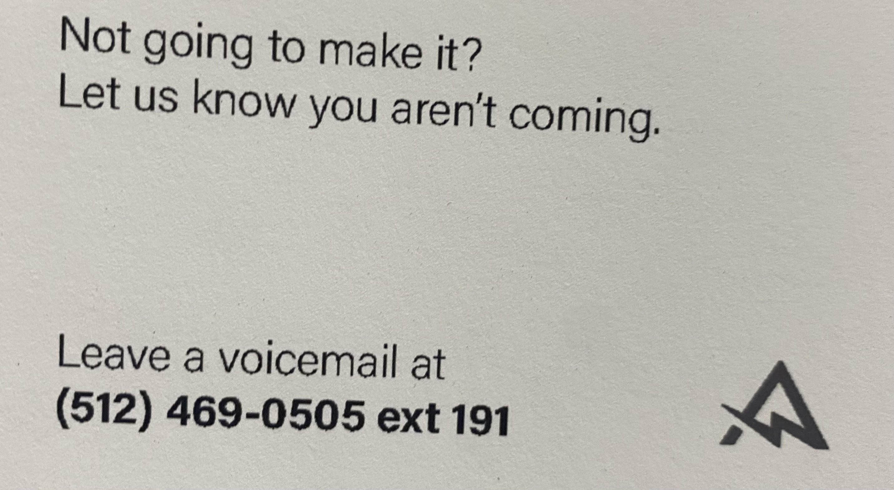

Inventory Movement
What we do
The Inventory Movement team has many tasks to perform thoughout the day.
Below listed are the tasks:
- Clear VASP% Location
- Clear PTWY% Location
- Replenishment
- Transfer list
- Deplenishment
Tasks Explanation
Clearing VASP% and PTWY% locations are our way of putting certain pallets of merchandise directly received by our Receving team either into storage or sending those pallets to our Asseembly team to be made ready, and then moved into storage.
Replenishment work is made by our computer system and is made based off what customers are ordering in bulk and will need to be shipped out for the day or for the near future.
Transfer work is created by the Team Lead or by the Team Line Lead. Both will require you to go to certain storage locations in the warehouse get a number of specific items from that location and then move them into a forward pick location. These forward pick locations will allow the "cart pickers" from our Fulfilment team to pick those items, pack then and ship them to the customers.
Deplenishment is when we move items that were in forward pick locations back into warehouse storage locations. We do this to free up forward pick spots for other inventory.
Team Lead
Every team in the warehouse will have a team Lead, and a Line Lead. The Team Lead is here to support you in anyway you need.Their goal is to move the team around to ensure the daily SLas are hit and to help you have a successful shift.
If you have any questions or concerns feel free to let your team lead know and they'll do there best to fix them. The Line Leads can also help throughout the day if you have any questions or help set the team up for a successful shirt if the Team Lead is at a meeting or out for the day.
Replenishment & Transfers
When doing replen and transfers you'll first start off with a single work order. From there you'll scan the work order with your RF Scanner.
The next step would be to go to the location on the work order to get the item. This location will also be displayed on the RF scanner. When you arrive at the location you will use the RF scanner to scan the pallet location. Next you will look on the pallet for the item you need. When you find this item it'll usually have a barcode on it. You'll scan the barcode, count the amount you need and add them to you cart for later. The next step will be to go to
the forward pick location to put the item up. Its important to always confirm our work on our RF scanner, this will let our computer system know the item is in place and allow other departments to get these items.
 This is what a single work unit print out looks like.The first thing we should notice is that the location we're picking from is. In this instance we're going to be going to a location on the 3rd level so we'll need to use the cherry picker machine to get to this level.
This is what a single work unit print out looks like.The first thing we should notice is that the location we're picking from is. In this instance we're going to be going to a location on the 3rd level so we'll need to use the cherry picker machine to get to this level.
 now that we've arrived at this location we will firsy scan the location with our RF scanner then look for the item on the pallet.
now that we've arrived at this location we will firsy scan the location with our RF scanner then look for the item on the pallet.
 Once this item is found we'll count the correct ammount and add it to our cart to be moved to its forward pick location>
Once this item is found we'll count the correct ammount and add it to our cart to be moved to its forward pick location>
Our SLA's
SLA stands for Service Level Agreement. Our first SLA it to complete Replenishment by 1PM. Our second SLA is to have Transfers completed by 2PM.
Busy or Light shift
Below is a display of the current work going on in the warehouse. This board can also be used to determine if we're close to hitting our SLAs.
This display is usually up on my Work desk as a refernce for the team. If the Board ever looks light, have no fear because there is always projects to work on or
other departments to help. It's common to work in multiple departments throughout a day, so its best practice to work and learn how other departments work.
When working on the team you will become familiar with driving and operating machinery in the warehouse. Below are images of the machinery we use everyday. To be eligiable to become an operatior, you'll have to watch a training video, pass a written test and be trained by our warehouse trainer. A pallet jack is also a common peice of equipment we use everyday.


If for any reason you wont be able to make your shift please call the number listed below

This will allow us to make the changes needed to have a sucessful shift.